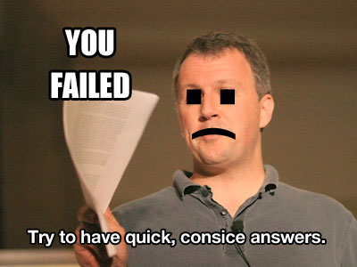

You have reached the end of questions
Hopefully you will be a little more ready for your YC interview, good luck! :)
Why not check out
GoScale
, it's cloud computing that scales in milliseconds.
Only listen to the questions
Only Read the questions
Listen and Read the questions
Speaking
-9 s

ProTip:
When talking to PG and the other YC partners, be substantive, and get straight to the point.
Key Controls
space
to restart timer
return
to next question